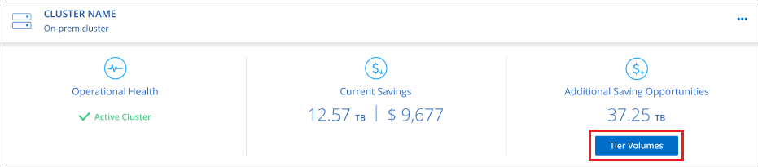
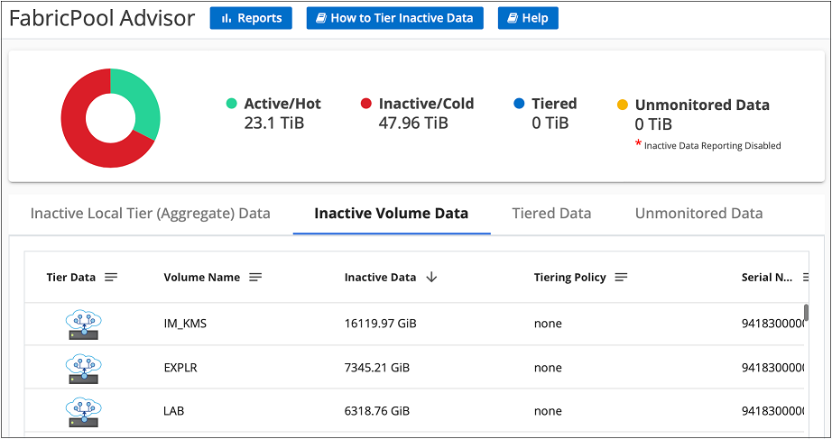

要求變更文件
要求變更文件 編輯此頁面
編輯此頁面 瞭解如何作出貢獻
瞭解如何作出貢獻從叢集管理資料分層
現在您已經從內部ONTAP 的物件叢集設定資料分層、您可以從其他磁碟區分層資料、變更磁碟區的分層原則、探索其他叢集等。
從其他磁碟區分層資料
隨時設定其他磁碟區的資料分層、例如建立新磁碟區之後。

|
您不需要設定物件儲存設備、因為它已在最初設定叢集分層時進行設定。將非作用中資料從任何其他磁碟區分層至同一個物件存放區。ONTAP |
-
在 Cloud Manager 頂端、按一下 * 分層 * 。
-
在 * 叢集儀表板 * 中、按一下叢集的 * 層級磁碟區 * 。

-
在「層級磁碟區」頁面上、選取您要設定分層的磁碟區、然後啟動「層級原則」頁面：
-
若要選取所有Volume、請勾選標題列中的方塊（
 ），然後單擊* Configure Volume*（配置卷*）。
），然後單擊* Configure Volume*（配置卷*）。 -
若要選取多個磁碟區、請勾選每個磁碟區的方塊（
 ），然後單擊* Configure Volume*（配置卷*）。
），然後單擊* Configure Volume*（配置卷*）。 -
若要選取單一Volume、請按一下該列（或
 圖示）。
圖示）。
-
-
在_分層原則_對話方塊中、選取分層原則、選擇性地調整所選磁碟區的冷卻天數、然後按一下*套用*。

選定的磁碟區開始將資料階層化至雲端。
變更磁碟區的分層原則
變更磁碟區的分層原則、可改變 ONTAP 將資料冷階移至物件儲存的方式。變更從您變更原則的那一刻開始。它只會變更磁碟區的後續分層行為、不會將資料追溯到雲端層。
-
在 Cloud Manager 頂端、按一下 * 分層 * 。
-
在 * 叢集儀表板 * 中、按一下叢集的 * 層級磁碟區 * 。
-
按一下某個磁碟區的列、選取分層原則、或是調整冷卻天數、然後按一下「套用」。
*附註：*如果您看到「擷取分層資料」選項、請參閱 將資料從雲端層移轉回效能層 以取得詳細資料。
分層原則隨即變更、資料也會開始根據新原則進行階層。
將資料從雲端層移轉回效能層
從雲端存取的階層式資料可能會「重新加熱」、並移回效能層級。不過、如果您想要從雲端層主動將資料提升至效能層、您可以在_分層原則_對話方塊中執行此動作。此功能可在使用ONTAP 更新版本的資訊時使用。
如果您想要停止在磁碟區上使用分層功能、或是決定將所有使用者資料保留在效能層上、但將Snapshot複本保留在雲端層上、則可以這麼做。
有兩種選擇：
| 選項 | 說明 | 對分層原則的影響 |
|---|---|---|
恢復所有資料 |
擷取所有階層在雲端上的Volume資料和Snapshot複本、並將其提升至效能層級。 |
分層原則已變更為「無原則」。 |
恢復作用中的檔案系統 |
只擷取雲端中階層式的作用中檔案系統資料、並將其提升至效能層（Snapshot複本仍保留在雲端）。 |
分層原則會變更為「冷快照」。 |

|
您的雲端供應商可能會根據從雲端傳輸的資料量向您收取費用。 |
確保效能層有足夠的空間容納從雲端移出的所有資料。
-
在 Cloud Manager 頂端、按一下 * 分層 * 。
-
在 * 叢集儀表板 * 中、按一下叢集的 * 層級磁碟區 * 。
-
按一下
圖示、選擇您要使用的擷取選項、然後按一下*套用*。
分層原則隨即變更、階層式資料也會開始移轉回效能層。視雲端資料量而定、傳輸程序可能需要一些時間。
管理 Aggregate 上的分層設定
內部ONTAP 系統的每個Aggregate都有兩個可調整的設定：分層完整度臨界值、以及是否啟用非作用中資料報告。
- 分層完整度臨界值
-
將臨界值設為較低的數值、可減少在分層之前儲存在效能層上所需的資料量。這對於包含少量作用中資料的大型 Aggregate 可能很有用。
將臨界值設定為較高的數字、會增加在進行分層之前、儲存在效能層上所需的資料量。這對於設計為僅在集合體接近最大容量時進行分層的解決方案而言可能很有用。
- 非作用中資料報告
-
非作用中資料報告（ IDR) 使用 31 天的冷卻期來判斷哪些資料被視為非作用中。分層的冷資料量取決於在磁碟區上設定的分層原則。此量可能與使用 31 天冷卻期的印尼盾偵測到的冷資料量不同。
最好保持啟用印尼盾、因為它有助於識別您的非使用中資料和節約機會。如果在 Aggregate 上啟用資料分層、則必須保持啟用印尼盾。
-
在 Cloud Manager 頂端、按一下 * 分層 * 。
-
在「 * 雲端分層 * 」頁面中、按一下叢集的功能表圖示、然後選取 * 管理 Aggregate * 。

-
在 * 管理 Aggregate * 頁面上、按一下
表格中的 Aggregate 圖示。 -
修改完整度臨界值、並選擇啟用或停用非使用中資料報告。

-
按一下「 * 套用 * 」。
檢閱叢集的分層資訊
您可能想要查看雲端層中有多少資料、以及磁碟上有多少資料。或者、您可能想要查看叢集磁碟上的熱和冷資料量。雲端分層可為每個叢集提供此資訊。
-
在 Cloud Manager 頂端、按一下 * 分層 * 。
-
在*叢集儀表板*中、按一下叢集的功能表圖示、然後選取*叢集資訊*。
-
檢閱叢集的詳細資料。
範例如下：

您也可以 "從Active IQ 「物件數位顧問」檢視叢集的分層資訊" 如果您熟悉此NetApp產品、只要從FabricPool 左側導覽窗格中選取*《顧問*》即可。

修復作業健全狀況
可能會發生故障。當他們執行此作業時、 Cloud Tiering 會在叢集儀表板上顯示「失敗」的作業健全狀況狀態。健全狀況反映 ONTAP 出功能不全系統和 Cloud Manager 的狀態。
-
識別任何運作健全狀況為「故障」的叢集。

-
將游標暫留在上方
 圖示以查看故障原因。
圖示以查看故障原因。 -
修正問題：
-
驗證 ONTAP 該叢集是否正常運作、以及是否有連至物件儲存供應商的傳入和傳出連線。
-
確認 Cloud Manager 已連線至 Cloud Tiering 服務、物件存放區及 ONTAP 其探索的物件叢集。
-
從雲端分層探索其他叢集
您可以ONTAP 從分層叢集儀表板將未發現的內部叢集新增至Cloud Manager、以便為叢集啟用分層。
請注意、按鈕也會顯示在「分層_高級版概述_」頁面上、供您探索其他叢集。
-
在雲端分層中、按一下*叢集儀表板*索引標籤。
-
若要查看任何未探索到的叢集、請按一下*顯示未探索到的叢集*。

如果您的NSS認證資料儲存在Cloud Manager中、則您帳戶中的叢集會顯示在清單中。
如果您的NSS認證資料未儲存在Cloud Manager中、系統會先提示您新增認證資料、然後才能看到未探索到的叢集。
-
向下捲動頁面以找出叢集。

-
按一下「探索叢集」、即可透過Cloud Manager管理叢集並實作資料分層。
-
在_選擇位置_頁面*內部部署ONTAP 的SURE*已預先選取、所以只要按一下*繼續*即可。
-
在「_ ONTAP 此叢集詳細資料_」頁面上、輸入管理員使用者帳戶的密碼、然後按一下「新增」。
請注意、叢集管理IP位址會根據您的NSS帳戶資訊填入。
-
在「Details & Credentials」頁面上、叢集名稱會新增為「工作環境名稱」、因此只要按一下「* Go *」即可。
Cloud Manager會使用叢集名稱做為工作環境名稱、探索叢集並將其新增至Canvas中的工作環境。
您可以在右側面板中啟用此叢集的分層服務或其他服務。